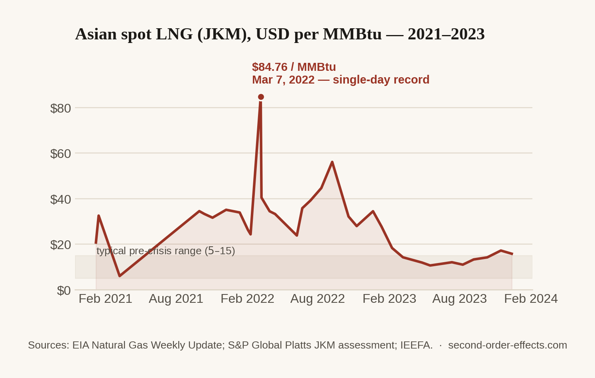

When Gas Becomes a Weapon: Europe's Scramble for LNG and the Bills It Left Behind
Europe's dash to replace Russian pipeline gas turned liquefied natural gas into the most contested commodity on the planet. Households in London paid for it. So did power plants in Dhaka, and a taxi driver in Mumbai.
Oil gets the headlines in every retrospective of 2022, but gas is the story I keep coming back to, because the mechanism is so much more naked. When Russia invaded Ukraine, Europe had a real, immediate problem: a large share of the gas that heats its homes and runs its factories through the winter arrived by Russian pipeline, and that pipeline had just become a geopolitical liability overnight. Europe's answer was blunt: buy liquefied natural gas from anywhere else on earth, in as much volume as possible, as fast as possible. That single decision reordered the global gas market for the next two years, and it didn't stop at Europe's border.
LNG travels by ship, not by pipe, which makes it a genuinely global commodity, and that's precisely what made Europe's scramble everyone else's problem. Europe wasn't just buying gas. It was outbidding every other buyer on the planet who also wanted gas. The Japan-Korea Marker, the benchmark price for Asian spot LNG, hit a single-day high of $84.76 per million British thermal units on March 7, 2022. For context: that market had spent most of the previous decade trading somewhere between $5 and $15. Europe's own benchmark, the Dutch TTF, printed above €300 per megawatt-hour by August, more than ten times its typical pre-crisis level.

Whoever pays more, wins the cargo. Everyone else goes without.
LNG is not allocated by need. It is allocated by price, cargo by cargo, on a market where a wealthy buyer in a hurry can simply outbid a poorer one. In the winter of 2022, that is exactly what happened, and the countries with the least room to pay felt it worst. Pakistan, which had built a growing share of its power generation around imported LNG, missed multiple import tenders that winter because no supplier would sell at a price Islamabad could afford. The result was scheduled load shedding across the country, hours of planned blackouts, in a nation of over 230 million people. Bangladesh had the same experience for the same reason: LNG-fired power plants sat idle because the fuel to run them had become too expensive to secure, and the country turned to rolling blackouts of its own. Neither country was ever a target of Europe's decision. They simply happened to be shopping in the same market, with a much smaller budget.
Europe itself did not escape its own scramble unhurt. The UK's household energy price cap, the regulatory ceiling on what a typical bill could be, rose from £1,277 a year in late 2021 to £3,549 by October 2022, before the government stepped in with a separate guarantee to hold typical bills near £2,500. Germany ended up nationalising Uniper, one of its largest energy importers, after the company's losses from replacing cheap Russian gas with expensive spot LNG became too large for a private balance sheet to absorb. The continent that started the scramble to protect its own energy security ended up paying some of the highest prices in its history to win it.
From a shipping benchmark to a kitchen stove
India's exposure ran through the same mechanism, at a smaller scale than Pakistan's blackouts but a more personal one for me, because I could watch it happen in a receipt. LNG feeds the city gas networks that supply CNG to a large share of the auto-rickshaws, taxis, and private cars in Delhi and Mumbai, and piped gas straight into apartment kitchens. When the wholesale price of imported gas moved the way JKM moved in 2022, a city gas distributor had exactly two options: absorb the loss, or pass it on. Mahanagar Gas, one of the country's largest city gas distributors, raised CNG prices by ₹6 per kilogram and PNG by ₹4 per unit. Multiply that across a metro area's worth of taxis, autos, and households cooking dinner, and what looks like a small line item on any single receipt adds up to a genuine transfer of cost, paid by people who never once heard the words "Japan-Korea Marker."
The quieter effect, and the one I find more interesting than any single price hike, is what happened to volume. Rather than keep buying LNG at record spot prices, India simply pulled back. LNG import volumes fell roughly 15% in the 2022 to 2023 fiscal year against the year before, even as the total import bill rose about 27%, because whatever gas India did buy cost so much more per unit. India and China posted some of the largest LNG import declines of any major economies during the crisis, not because either country stopped needing gas, but because the price of showing up to buy it had gotten too high.
Europe's energy security problem never touched a Pakistani power plant, a Bangladeshi substation, or an Indian gas field. It only had to touch a price. The price did the rest of the travelling on its own.
Why this one felt different to me
I watched this one from Singapore rather than from an Indian kitchen or a blacked-out Karachi street, so my version of it was less a CNG receipt and more a spreadsheet. Fuel and logistics costs run through nearly every line of my family's agricultural export business, and 2022 was the year "energy prices" stopped being a macro talking point and became an input I had to actually forecast around. What struck me most, researching this one properly rather than just living adjacent to it, is how uneven the mechanism turned out to be. The same shortage that showed up as a slightly higher bill in Mumbai showed up as scheduled darkness in Karachi and Dhaka. Nobody designed it to land that unevenly. A single global price simply meets very different budgets in very different places, and the gap between those budgets decided who kept the lights on.
Sources
- IEEFA — Volatile global LNG market: impact on India
- Business Standard — how high global gas prices affect India
- S&P Global Commodity Insights — Asia-Pacific energy crisis factbox, covering Pakistan and Bangladesh LNG shortfalls
- Ofgem — energy price cap history, UK
- Chart data compiled from the U.S. EIA's Natural Gas Weekly Update and S&P Global Platts' JKM price assessment, 2021–2023.
Comments